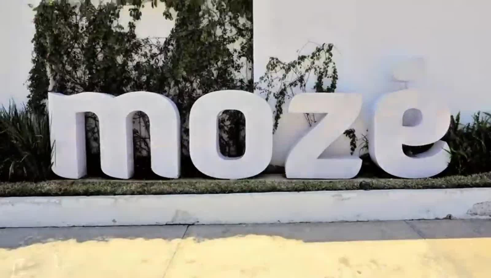
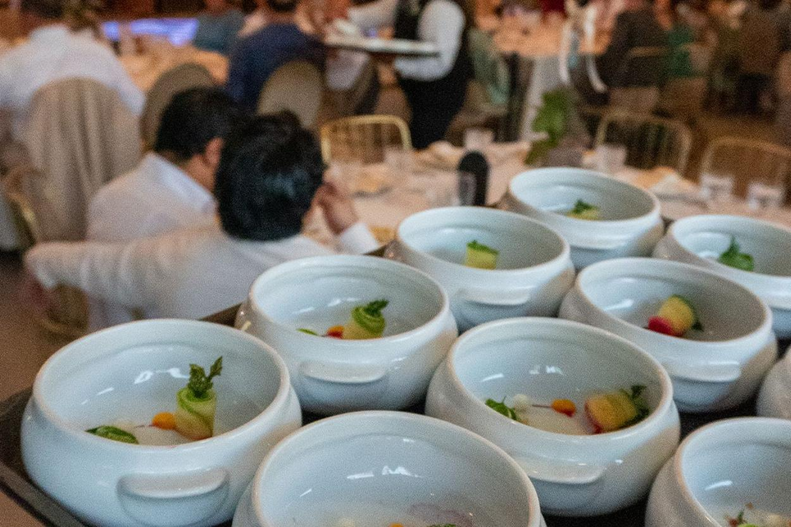

Tuxtla Gutiérrez · Chiapas
Dos salones, un jardín y todo en un mismo lugar
En un mismo lugar
No rentamos un salón. Resolvemos la noche completa: el espacio, la comida, el montaje y la gente que atiende.
Los espacios
Los espacios de MOZÉ
El jardín
Al aire libre,
bajo los árboles.
Árboles maduros y luces colgantes. Funciona para la ceremonia, para el cóctel o para la fiesta completa, y conecta con los salones sin cortar el ritmo de la noche.
Agenda una visitaEventos
Distintas maneras
de usar los salones.
Confía en los expertos
Servicios
En un mismo
lugar.
Resuelves aquí lo que normalmente se contrata con cinco proveedores distintos.
Banquetera
Banquetera
propia.
Realiza tus pruebas de menú para escoger lo más adecuado para tu evento, desde opciones para niños hasta opciones gourmet.
Agenda tu prueba de menúMontajes
Montajes
espectaculares.
Capacidad para realizar el montaje que imaginas.
Cristalería
Cristalería
y plaque.
Opciones versátiles y elegantes
Aliados con Table Set te ofrecemos una amplia variedad de mesas y sillas para completar el montaje.
Solicitar catálogoServicio
Servicio por
profesionales.
Personal, meseros y vendedoras capacitadas con más de 13 años de experiencia atendiendo eventos de todo tipo.

Testimonios
Lo que dicen
quienes ya celebraron.
Publicadas en Google, sin editar.
Leerlas en GoogleContacto
Tu evento
empieza aquí:
Cuéntanos qué tienes en mente. Te respondemos con disponibilidad y una cotización, sin compromiso.
Ubicación